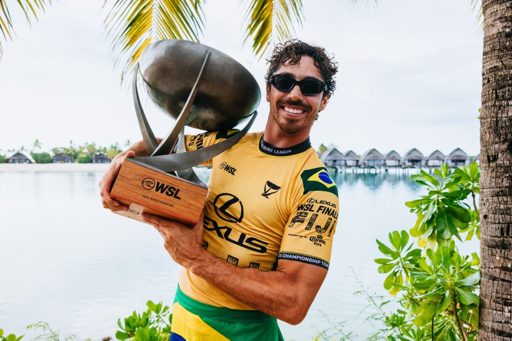

Pela oitava vez em 11 anos, o título mundial da WSL ficou com um brasileiro. Aos 29 anos, Yago Dora entrou para a galeria de campeões do mundo ao superar o americano Griffin Colapinto (15.66 a 12.33) no confronto decisivo do Finals. Líder da temporada regular, o curitibano radicado em Florianópolis só precisou de uma vitória para sacramentar o título, uma vez que o seu desafiante necessitava vencer o primeiro confronto para forçar uma melhor de três.


Yago agora se junta a Gabriel Medina (2014, 2018 e 2021), Filipe Toledo (2022 e 2023), Adriano de Souza (2015) e Italo Ferreira (2019) como os brasileiros campeões da WSL. De 2014 para cá, apenas em 2016, 2017 e 2023 o título ficou com um estrangeiro - nas três oportunidades o campeão foi o havaiano John John Florence, sendo que em 2020 não houve competição devido à pandemia da Covid-19.